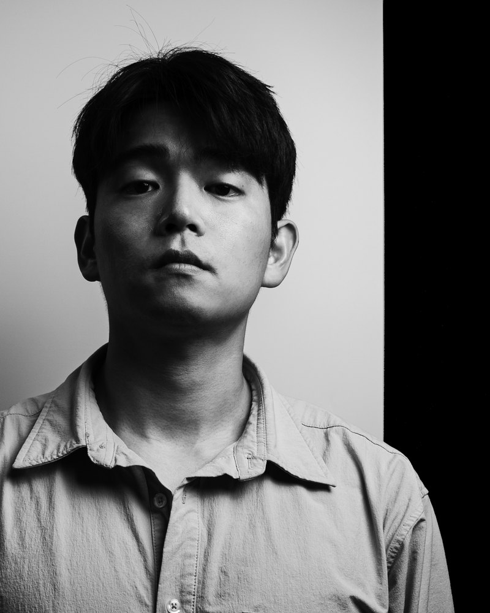

05Our Story

안녕하세요,
마모루 대표 백성민입니다
저는 가위수리 경력 50년 아버지의 영향을 받아 가위 영업을 시작했습니다. 일제가위 판매회사에서 경험을 쌓았고, 2~300만원대 명품 가위도 취급해보았습니다.
자연스레 가위에 대한 지식과 경험이 쌓였고, 가위 시장에 대한 의문이 생겼습니다.
미용사는 딜러의 방문을 부담스러워하면서도 판매자에게 의지하는 이유.
가위를 선택하는 기준이 가격밖에 없다는 것.
가위가 불편하지만 그 이유를 사용자가 알 수 없는 구조.
이런 구조가 과연 올바른 구조일까요?
저희는 이런 구조를 바꾸고 싶습니다.
가위 불편함의 원인을 알게 하고, 올바른 선택법을 안내하며, 불필요한 지출을 막아 고객님이 오래 쓰실수록 만족을 느끼실 수 있는 것.
이것이 마모루의 방향입니다.
영업 병아리 시절, 고객이 불편한 이유와 그럴 수밖에 없는 이유를 알기 전까지는 고객과의 상담이 무서웠습니다.
하지만 지금은 즐겁습니다.
어떠한 고객이든 파악하고 불편을 해결할 수 있다는 자신감과 확신이 있기 때문입니다.
마모루는 약속합니다.
언제나 가격을 뛰어넘는 가치를 제공하겠습니다.
CUT THE FAKE,
KEEP THE REAL